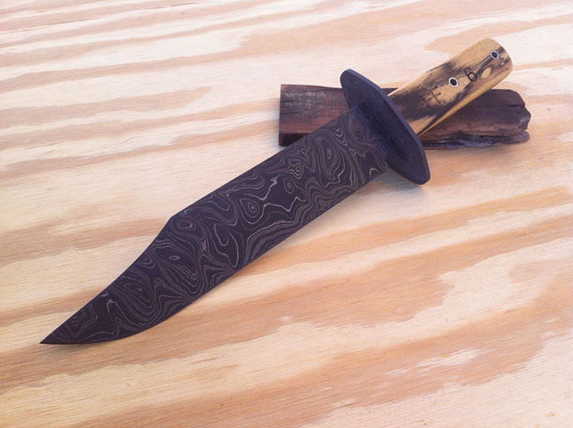

Knife making Portfolio
OA Bowie
Damascus Bowie with black & white ebony scales.

OA Antler Nessmuk
Deer antler handle, hidden tang nessmuk style blade.
OA Nessmuk
Canvas Micarta scales, nessmuk style blade.
OA Vigilante
Cidar wood scales, all purpose knife.
Commisioned blade
Deer antler scales, full tang skinner.